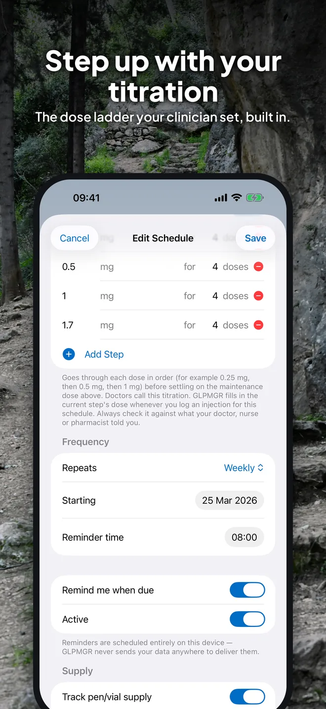
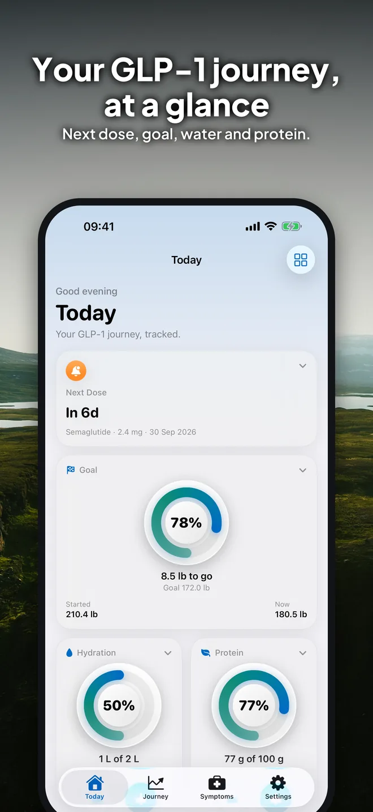
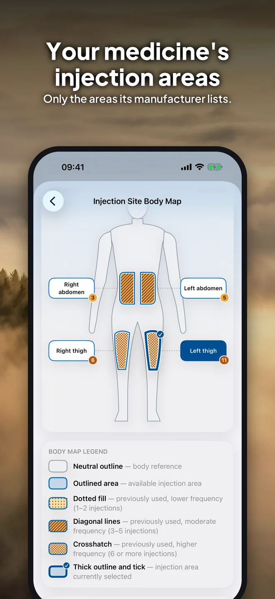
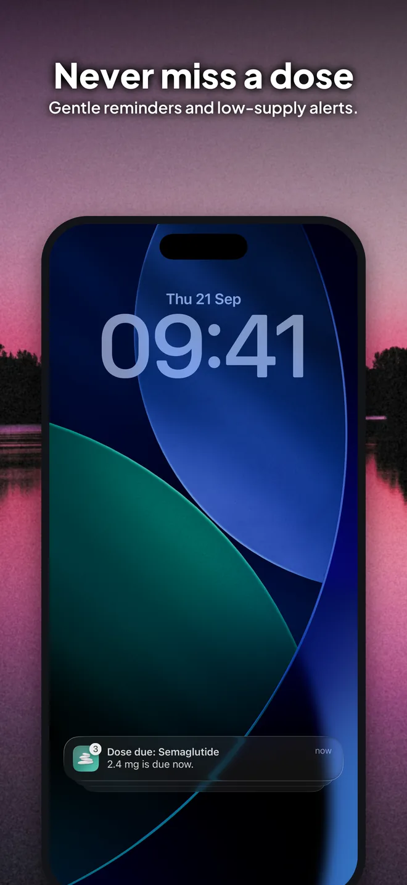
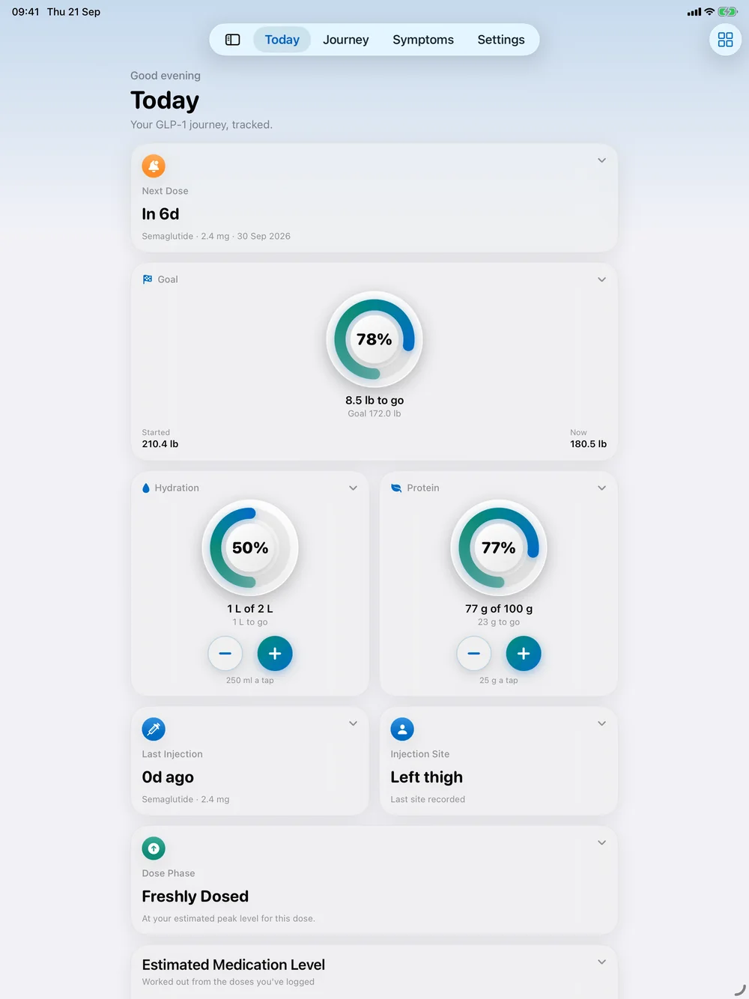
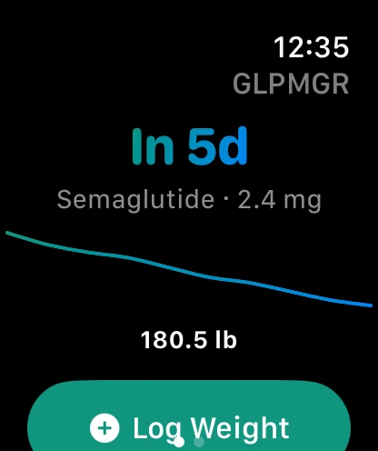

Doses & reminders
Record injections or tablets in a few taps, with reminders when a dose is due and when supply runs low.
GLPMGR helps people on GLP-1 medicines keep track of their doses, dose steps, weight and how they feel, without an account and without their data leaving their device. It's written in plain English, with a gentle tone and no judgement, for Mounjaro, Wegovy, Ozempic and other GLP-1 medicines.



Record injections or tablets in a few taps, with reminders when a dose is due and when supply runs low.
Enter the steps your prescriber gave you and GLPMGR fills in the right dose each time, up to your maintenance dose.
Only the areas each manufacturer lists for your region, with a body map of where you've injected before.
A gentle view of your progress, and a diary for how you feel, ready to share with your doctor or nurse.
Log water and protein, and read the protein figure straight from a food label with your camera.
No account, no ads, no tracking. Progress photos are encrypted and locked behind Face ID.
Swipe through the real app.





Pricing: Free to use, with no time limits: doses and dose steps, reminders, weight, side effects, water, blood glucose, the Apple Watch app and backups. Premium adds more ways to see your progress, with a 7-day free trial on the yearly plan.
Good to know: GLPMGR is a personal tracking tool, not a medical device, and it never suggests a dose or where to inject. Always follow the advice of your doctor, nurse or pharmacist.


GLPMGR has its own website, with a full user guide, support and policies.
Injection sites by medicine: Mounjaro, Wegovy, Ozempic, Zepbound, Saxenda, and more.
See what you're flying over. A window-seat companion that names the landmarks, cities and natural wonders below your plane, even in airplane mode.
The fitness plan that adapts around you. One adaptive Daily Plan that reads Apple Health each morning and adjusts today's training and food targets together.